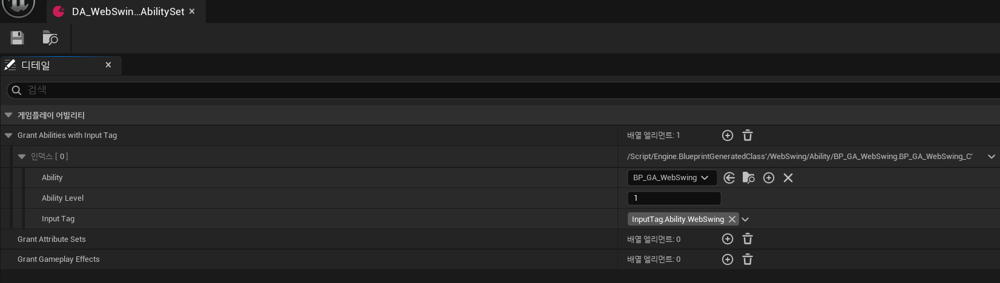
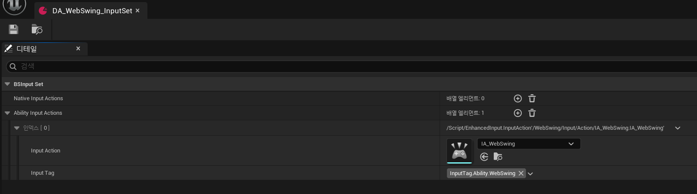
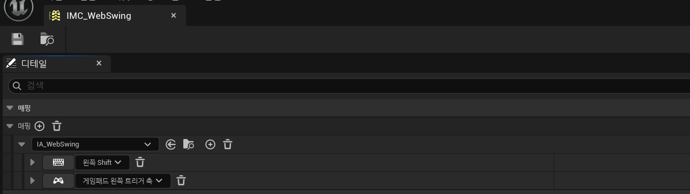
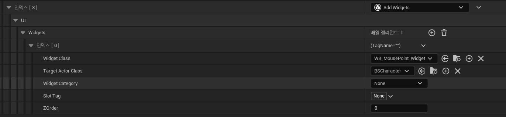
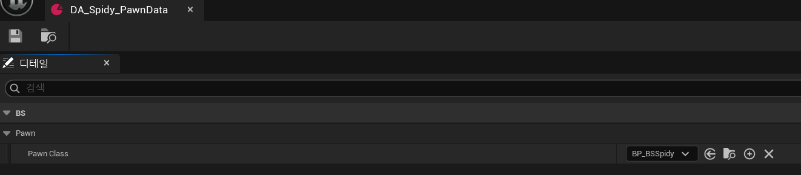
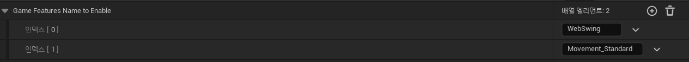
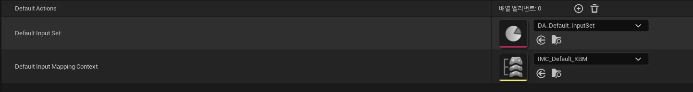

개요
GameFeature와 그 안의 커스텀 GameFeatureAction를 사용해 모듈형 게임 플레이 프레임워크를 개발했습니다.
해당 프레임워크로 스파이더맨을 구현하는 프로젝트입니다.
Lyra를 분석해보고 좀 더 협업에 편한 구조로 내 프로젝트에 맞는 프레임워크로 발전시키는 과정이었습니다.
특정한 문서로 규칙을 정의하는 것보다는, 코드에서 규칙이 보이도록 일관성 있게 짜는 것이 중요하다고 생각해서 그 부분을 좀 더 신경썼습니다.
1. 결과

스파이더맨으로 캐릭터를 변경하는 과정에서 여러 게임 피처 액션으로 구성된 게임 피처를 만들었습니다.
구현된 프로젝트는 밑의 Github 링크에서 보실 수 있습니다.
2. 핵심 아키텍처
모듈형 게임 플레이는 레고처럼 기능들을 조립하는 것입니다.
프로젝트에서 레고에 해당하는 것들은 다음과 같습니다.
캐릭터가 2개 이상인 프로젝트를 대상으로 레고 세트도 준비했습니다.
- 레고: GameFeature
- 레고 세트: CharacterDefinition
2-1. Lyra에서의 개선점
Lyra는 GameFeature를 하나의 장르(예: ShooterCore)로 사용해 여러 시스템(카메라, 무기 등)을 포함하고 있습니다.
이는 레고 단위보다 조금 더 큰 느낌이어서 범위를 파악하기 힘들고 작업자도 여러 명이 될 수 있습니다.
→ 이 프로젝트에서는 GameFeature를 하나의 기능 또는 좀 더 제한된 범위로 정의하려고 합니다.
하나의 GameFeature는 한 명의 담당자가 맡는 것이 좋을 것입니다.
3. GameFeature
레고 = GameFeature = 여러 개의 GameFeatureAction이라고 할 수 있습니다.
이 GameFeature를 Active하면 무슨 일이 벌어지는가?에 해당합니다.
기본 제공하는 것 외에 사용자 정의 액션들을 구현했습니다.
3-1. Add AbilitySet
AbilitySet은 타겟 액터에 어빌리티, 어트리뷰트, 게임플레이 이펙트들을 추가할 수 있는 액션입니다.
어빌리티를 추가할 때는 InputTag와 같이 추가해서, 키를 눌렀을 때 해당 InputTag와 매치된 어빌리티를 실행하게 됩니다.
3-2. Add InputSet
InputSet은 타겟 액터에 InputAction과 InputTag를 매치해 InputComponent를 통해 바인딩합니다.
InputAction이 발동되면 매치된 태그에 맞는 어빌리티를 발동하게 됩니다.
3-3. Add InputMappingContext
InputMappingContext은 InputAction을 어떤 키로 발동시킬 것인가를 결정합니다.
InputAction만으로는 입력을 처리할 수 없습니다. 타겟 액터에 이 IMC를 부여합니다.
3-4. Add Widgets
타겟 액터의 화면에 위젯을 출력합니다.
PlayerUISubSystem을 구현하여 플레이어의 위젯을 모두 관리하고 있기 때문에 모든 생성된 위젯을 가져오기, 제거하기 등의 기능을 할 수 있습니다.
4. WebSwing 게임 피처 파헤치기

이 게임피처에 해당하는 콘텐츠들은 해당 게임 피처 플러그인 폴더 안에 저장되어 있습니다.
코드 뿐만 아니라 콘텐츠도 코어 모듈과 독립되어 있습니다.
웹스윙 게임 피처를 활성화하면, 다음과 같은 일이 벌어집니다.
BSCharacter에게:
- Add AbilitySet - Ability 부여 (InputTag.WebSwing와 매치)
- Add InputSet - WebSwing InputAction과 InputTag.WebSwing와 매치해서 바인딩
- Add IMC - Webswing InputAction을 Shift 키로 바인딩
- Add Widget - 화면에 웹이 발사되는 크로스헤어 UI 출력

현재 캐릭터와 크로스헤어 UI가 겹치고 있습니다. 이를 해결하기 위해서는 카메라를 조정해주어야 하는데, Add Camera 액션을 만들어 코드로 수치를 입력한다면 기획자가 작업하기 불편하고 때문에 이는 해당 캐릭터의 블루프린트에서 작업하도록 했습니다.
5. Character Definition

CharacterDefinition은 PrimaryAsset에 해당해 에셋 매니저로 비동기 로드 및 검색이 가능합니다.
캐릭터에 적용할 레고들을 미리 모아둔 레고 세트에 해당합니다.
이 에셋을 생성해서, 필요한 데이터를 채우면 캐릭터 하나가 완성됩니다.
기획자 입장에서는 코드 입력 필요없이 여러 가지를 조합해 캐릭터를 만들 수 있습니다.
5-1. PawnData
단순히 캐릭터의 블루프린트입니다. 기존 캐릭터가 Destroy되고 해당 캐릭터로 스폰됩니다.
5-2. Game Features Name To Enable
활성화할 게임 피처들의 이름입니다.
5-3. Default Actions, InputSet, IMC
이 캐릭터에 적용할 GameFeatureAction, InputSet, IMC입니다.
GameFeature 안에도 있는 기능들이지만, 기본적으로 부여할 방향키 이동 같은 것들을 부여하기 위해서 추가했습니다. 그리고 빠른 프로토타이핑과 테스트를 위해서도 사용할 수 있습니다.
6. DA_Spidy_Definition으로 캐릭터 변경하기 파헤치기

캐릭터 변경은 BSCharacterDefSystem (UGameInstanceSubSystem)으로 가능합니다.
게임 인스턴스와 수명 주기를 같이 하며, 하나만 존재합니다.
캐릭터 변경을 시도하면 다음과 같은 과정이 진행됩니다:
- 새로운 Pawn으로 리스폰
- 이 때 Pawn의 InputComponent에서 Default InputSet, IMC를 바인딩합니다.
- 게임 피처 액션 실행
- 게임 피처 활성화 (비동기)
- WebSwing
- MovementStandard (점프, 대쉬 어빌리티가 들어있으며, 추후 달리기와 같은 기본 이동을 더 추가하기 위해 이렇게 네이밍했습니다. 하나의 기능만 포함된 건 아니지만 소규모로 판단되어 이렇게 정했습니다.)
연속 캐릭터 변경 예외 처리:
- 게임 피처 활성화는 비동기로 진행되기 때문에, 연속으로 캐릭터를 교체할 때의 예외 처리가 필요했습니다.
- 만약 캐릭터 변경이 진행중이라면 PendingArray에 교체할 데이터를 넣어두고,
- 진행중인 변경이 끝나면 PendingArray에서 Pop해 다음 캐릭터 변경을 진행합니다.
이렇게 캐릭터 변경이 완료됩니다.
7. 모듈형 게임플레이의 장단점
Lyra 프레임워크를 분석하면서 느낀점과 직접 프레임워크를 제작하면서 느낀 장단점을 적어보았습니다.
실제로 더 큰 프로젝트에서 많은 인원과 이 프레임워크를 사용해보고 싶습니다.
장점
- 유지보수가 쉽다: 기능별로 코드가 분리되어 있어서 수정할 때 해당 게임 피처 찾으면 된다.
- 재사용할 수 있다: 한번 만든 GameFeature를 다른 캐릭터나 프로젝트에서도 사용할 수 있다.
- 빠르게 테스트할 수 있다: CharacterDefinition으로 코드 수정 없이 여러 조합을 바로 시도해볼 수 있다.
- 메모리를 효율적으로 쓸 수 있다: 필요한 기능만 로드하면 되니까 메모리 관리가 된다.
단점
- 처음 만들 때 시간이 오래 걸린다: 모듈형 구조를 설계하고 시스템을 구축하는데 시간이 필요하다.
- 작은 프로젝트에는 과할 수 있다: 간단한 게임이나 1인 개발에는 오히려 복잡해질 수 있다.
- 비동기 처리를 고려해야 한다: GameFeature 로딩이 비동기라서 연속 호출 같은 예외 상황을 처리해야 한다.
이런 프로젝트에 적합하다
- ✅ 캐릭터나 기능이 여러 개인 프로젝트
- ✅ 여러 명이서 협업하는 프로젝트
- ✅ DLC나 추가 업데이트를 계획하는 프로젝트
- ✅ 장기간 유지보수할 프로젝트